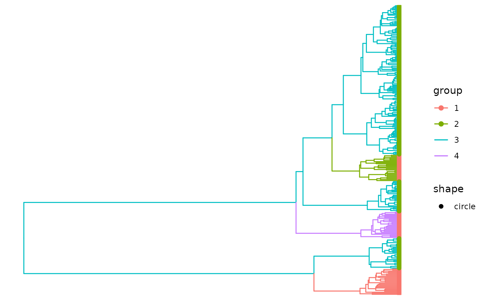

Plot TreeStructure tree with cluster and partition variables
Usage
# S3 method for class 'TreeStructure'
plot(x, use_ggtree = TRUE, ...)Examples
tree <- ape::read.tree( system.file('sim.nwk', package = 'treestructure') )
(struc <- trestruct( tree ))
#> Tree has NA or duplicated tip labels. Adding a unique id.
#> Finding splits under nodes: 276
#> Finding splits under nodes: 276 526
#> Finding splits under nodes: 276 421
#> Finding splits under nodes: 276 473
#> Call:
#> .trestruct(tre = tre, minCladeSize = minCladeSize, minOverlap = minOverlap,
#> nodeSupportValues = nodeSupportValues, nodeSupportThreshold = nodeSupportThreshold,
#> nsim = nsim, level = level[1], ncpu = ncpu, verbosity = verbosity,
#> debugLevel = debugLevel, useNodeSupport = useNodeSupport,
#> tredat = tredat)
#>
#> Significance level: 0.01
#> Number of clusters: 4
#> Number of partitions: 2
#> Number of taxa in each cluster:
#>
#> 1 2 3 4
#> 25 25 200 25
#> Number of taxa in each partition:
#>
#> 1 2
#> 75 200
#> ...
#> For complete data, use `as.data.frame(...)`
#plot treestructure object
plot(struc)
